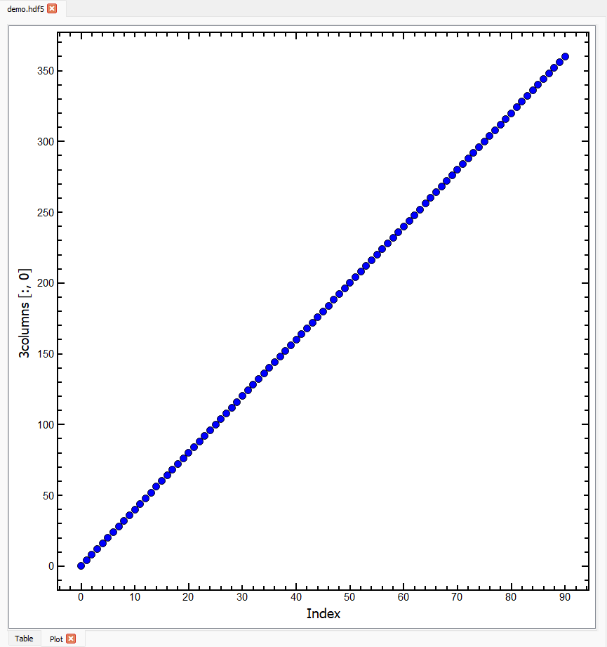

Plot Tab Tutorial#
Introduction#
This tutorial uses data in the file demo.hdf5. You can generate this file by following the instructions on Making the demo HDF5 file.
Open demo.hdf5 in hdf5view and select the dataset 3columns. The hdf5view application window should look like this:

The state of the hdf5view application after selecting the dataset 3columns in the File Structure of demo.hdf5.#
To open a Plot tab at the current dataset, click the plot icon on the toolbar at the top of the application:
The plot icon.#
The application will now look like this:
The state of the hdf5view application with a Plot tab opened at the dataset 3columns in demo.hdf5.#
In addition to the default Table tab, a Plot tab is now open in the central tabbed area showing the plot according to the default slice for this dataset, (:, 0). This means that all the rows of the first column of data are plotted on the y-axis against the Index (row number) on the x-axis. The y-axis label shows the name of the dataset and the current slice.
The axis labels of the plot are updated accordingly if the dataset or slice are changed.
You can have several
Plottabs open at once.Plottabs remember the dataset and slice if you switch to a different tab and back.Switching to a different dataset results in the default rendering behaviour for the plot.
Changing the Plot#
Let’s have a more detailed look at the dataset 3columns in demo.hdf5. The Attributes table for this dataset shows us that the three columns contain values of “x”, “sin x” and “cos x”, and that the range of “x” is 0:364:4 i.e. 0 to 360 inclusive in steps of 4.

Looking again at the default plot which plots all the rows of the first column against the Index, we can now see that the values of the y-axis range from 0 to 360 and from the x-axis, that there are 91 of them:
The plot above shows the first column of 3columns (which is descibed in the Attributes table as “x”) against the Index. If we want to plot the second column of 3columns (which is descibed in the Attributes table as “sin x”) against the Index, we can simply set the Slice table to be (:, 1):
You can also slice in the first dimension e.g. to plot the every third data point in the second column, set the Slice to (::3, 1):
Note
After changing the Slice table, the y-axis label on the plot is updated to show the current slice. We are plotting a single column of data against the Index, so the x-axis label does not change, but the range of the x-axis is updated to reflect the new slice.
Plotting two columns against each other#
Until now, the slices we have chosen all result in a 1D output which is plotted against the Index. The Slice table can be used to select two columns to be plotted against each other. The axis labels in the plot are updated accordingly. As an example, to plot all the rows of the last two columns of 3columns against each other, set the slice to (:, 1:):
Referring to the Attributes table of 3columns, we can see that the plot above shows “cos x” on the y-axis and “sin x” on the x-axis. The names of the columns being plotted can be much more easily seen on datasets with compound names.
Datasets with Compound Names#
The dataset compound_names in demo.hdf5 contains exactly the same data as the dataset 3columns but is organised with compound names. In this way, plotting a single column of data against the Index results in the compound name of the column being shown on the y-axis, e.g. for the slice (:, 1) the plot is:
On plotting two columns of data against each other, both x and y axis labels are updated accordingly. For example, for the slice (:, :2) on the dataset compound_names the plot shows “sin x” against “x” (instead of against the Index):
Plotting on Higher Dimensional Datasets#
Up until now, we have been concerned with plotting columns of data but it is equally possible to plot other slices. Select the dataset rgba in demo.hdf5 and open a Plot tab, and the application will look like this:
The dataset
rgbahas the shape(3, 1024, 1024, 4), which means that there are 3 rgba images stacked in the first axis and that the images are 1024 by 1024 pixels. Each pixel has four values associated with it: red, green, blue and alpha, which define the colour and transparency of the pixel.The default slice on the
Plottab for the datasetrgbais(0, :, 0, 0), which therefore shows the red channel of all the pixels in the first column of the first image in the stack. The default plot (above) appears to contain only random values, which is correct for this dataset.
If we change the slice to (0, 125, 152:325, 0) the plot will look like this:
Note
We are now plotting a horizontal slice across the image (the red channel values in columns 152 to 324, in row 125 for the first image in the stack).
In the plot above, we can see random values at the beginning and end, and a region in the middle with constant red values of 255. This is because the current slice passes through a red square on the image surrounded by colour noise.
Tip
We can inspect these images more easily on an Image tab - see the Image Tab Tutorial.
To inspect the green channel for the same pixels, we can change the slice to (0, 125, 152:325, 1) the plot will look like this:
The green values are all zero in the region where the red values were 255 (the red box on the image has colour values rgb = [255, 0, 0]).
To inspect the alpha channel for the same pixels, we can change the slice to (0, 125, 152:325, 3) the plot will look like this:
The alpha values are 255 for all pixels indicating that the image is opaque.
Using the Scroll Bar#
At the bottom of the Plot tab, a scroll bar will appear if the dataset has more than 2 dimensions. Using the scroll bar, you can scroll through the first axis of the dataset. Taking the dataset rgba with the slice (0, 125, 152:325, 0), we can move the scroll bar to the right. The plot and slice will update accordingly and the new slice will be (1, 125, 152:325, 0):
This plot only shows random values of the red channel for the pixels selected because there is no red square at that location on the second image in the stack.
Interacting with Plots#
When the mouse is inside the axes on a
Plottab, the x and y coordinates of the mouse in data coordinates will be shown on the message bar on the bottom left of the hdf5view application window.If you press and hold the left mouse button, you can drag the mouse to define a rectangle on a plot. When you release the mouse button, the plot will zoom to the rectangle selected.
To reset the zoom, right-click on the plot and select
View Allfrom the menu that appears.
Note
Using the rectangle select zoom does not change the Slice table in the current version.
The right-click menu contains several options for interacting with the plot:
The
X axisandY axismenus provide options for manually scaling the axes.The
Mouse Modemenu enables switching between the default1 buttonmode (i.e. rectangle zoom, described above) and3 buttonmode where the left mouse button can be used to pan across the plot, the mouse wheel zooms in or out, and the right mouse button can be used to stretch or compress an axis.The
Plot Optionsmenu provides, amongst others, possibilities to transform (e.g. calculate log or power spectrum), downsample (e.g. plot one in ten points) or add an average curve to the plot.
Exporting Plots#
Plots can be exported to several formats for further use. To access this option, right-click on a plot and select Export.... The export wizard will then be shown. The export formats avilable are:
For further information, see the pyqtgraph documentation.
Default Slices on the Plot Tab#
On selecting a dataset in the File Structure table, the Slice table adopts certain default values depending on the shape of the dataset. These default values are intended to act as a sensible starting point for displaying data in the Plot tab. You can then change the Slice as needed.
The defaults on the Plot tab for various dataset shapes are as follows:
ndim = 1: all the data are plotted against the index, Slice:
:ndim = 1 with compound names: the data in the first column are plotted, Slice:
:, 0.ndim = 2: all the rows of the first column are plotted, Slice:
:, 0ndim > 2 and shape[-1] in [3, 4]: here we assume that the data are rgb(a) images and plot as default all the rows of the -3rd axis in the first column of the -2nd axis and the first column of the -1st axis (red channel), last 3 axes of Slice:
:, 0, 0.ndim > 2 and shape[-1] Not in [3, 4]: we plot as default all the rows of the -2nd axis in the first column of the -1st axis, last 2 axes of Slice
:, 0.
The default slices on the Plot tab can be summarised as follows:
ndim |
condition |
interpretation |
default slice |
|---|---|---|---|
0 |
N.A., no plot possible |
||
1 |
(:,) |
||
compound names |
2D array |
(:, 0) |
|
2 |
(:, 0) |
||
> 2 |
shape[-1] in [3, 4] |
rgb or rgba image(s) |
([0] * (ndim - 3) + [:, 0, 0]) |
shape[-1] Not in [3, 4] |
([0] * (ndim - 2) + [:, 0]) |
You can test these default values by selecting different datasets on a Plot tab in the file demo.hdf.